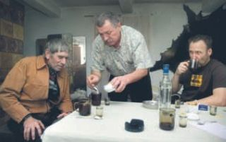

Olga Hryńkiw - Tam były najsłodsze maliny i najbardziej pachniały poziomki
(Przemyski Przegląd Kulturalny, Nr 4 (7) 2007)
Panorama z Kopystańki w strone Kopyśna
– Kiedy pada hasło „miejsce magiczne”, moje pierwsze skojarzenie to Kopyśno – mówi Jarek. Kilka lat temu ochrzcił w tutejszej cerkwi syna, choć urodzeniem ani niczym innym z tą umarłą wioską na zboczu Kopystańki nie jest związany. Osób, dla których opustoszała wieś na odludziu z wytłumaczalnych i niewytłumaczalnych powodów jest ważna, zliczyć można dużo. O wiele więcej niż chałup, które w Kopyśnie się jeszcze ostały.
„Miejsce magiczne” – określenie przed laty modne, dziś nadużywane i przez to zdewaluowane. Mówi się tak o staromiejskich zakątkach, zaniedbanych, ale mimo to albo dlatego właśnie pełnych nieuchwytnego uroku. O widokowych miejscach w górach, o których wiedzą wszyscy „prawdziwi turyści”. Przy czym – co dla spełnienia kryteriów miejsca magicznego najważniejsze – jedne urocze zakątki i widokowe pagórki mają jeszcze „to coś”, co sprawia, że tytuł „miejsca magicznego” jest im przyznawany, inne, choć urodą nie ustępują wcale – nie. Ten tekst będzie próbą zdefiniowania, czym jest „to coś”.
Ponadstuletnia modrzewiowa chata Kettnera
Kopyśno (Kopysno, Kopystno) to wieś na zboczu Kopystańki, najwyższego wzniesienia Pogórza Przemyskiego. Sama góra, określana przedrostkiem naj z tytułu metrażu, jest jeszcze miejscem najbardziej panoramicznym: niezalesiony wierzchołek daje widoki na wszystkie strony świata i każda jest piękna. To wioska, która dziś nie ma ani jednego stałego mieszkańca, a przed sześćdziesięciu laty tętniła życiem: przed wojną było tu 148 numerów: – Nie potrafię powiedzieć, co mnie tu ciągnie... – mówi Jarek. – Chyba szacunek dla przeszłości. To tak jak z Przemyślem. Kiedy pomyślę, ile to miasto ma lat, jak ważne rzeczy tu się działy, jak ciekawi ludzie wydeptywali bruk, po którym i ja teraz drepczę, to aż mnie ciarki przechodzą...
Autor przewodników Mieczysław Orłowicz w 1917 roku określił Kopyśno jako [...] ruską wioskę górską, należącą do najstarszych, bo datowanych na początek XV wieku, miejscowości tej części ziemi przemyskiej. Wioska była gniazdem ruskiej szlachty, z której wywodził się prawosławny biskup przemyski Michał Kopystyński.
Członkowie chóru cerkiewnego w Kopyśnie
Nocami władyka z latarnią pomyka
Wiadomo, że władyka zmarł w 1609 roku, nie wiadomo do końca, gdzie jest pochowany – niektórzy twierdzą, że nieopodal wsi, na wzgórku zwanym Horbysko, i że to właśnie jego duch pomyka wieczorami po kopyśniańskich łąkach, rozświetlając sobie drogę latarnią...
Ba, są powody, by sądzić, że ludzie pojawili się tu znacznie wcześniej niż w XV wieku. W pobliskim lesie zwanym Grabnik odkryto pozostałości grodu datowanego na XI/XII wiek, według tradycji stał tam niegdyś zamek, stąd dawni mieszkańcy wsi nazywali to miejsce Zamczyskiem. Ponoć była tam kiedyś bardzo głęboka studnia i podziemne przejście do Rybotycz. Dziś miejsce to wygląda po prostu jak pagórek w lesie, z tym że nienaturalnie spiczasty, zamczyska dopatrzyć się w nim jednak nie sposób. Ale już cudowne źródełko bijące spod wielkiego buka, wkładane przez niektórych między bajki, istnieje naprawdę – to drewniana i dość niepozorna cembrowinka o wymiarach maksymalnie 50 na 50 centymetrów, w której zbiera się źródlana woda. Ze źródełkiem wiążą się dwie piękne legendy: jedna o tym, że zakochani, którzy napiją się tu wody i dotkną dłonią pnia buka, szczęście w miłości będą mieli zapewnione, druga – że w Wielkanoc z korony drzewa słychać bicie dzwonów. Za istnienie źródełka autorka ręczy słowem; odnalazła je i odkopała kilka lat temu spod wielkiej sterty liści osobiście! Tyle że w tym roku ślad po źródełku zaginął i dowodu w postaci zdjęcia przedstawić nie można.
W okresie międzywojennym wioska miała ponoć własny sklep z wyrobami tytoniowymi, karczmę, dwie kuźnie, dwóch szewców, sklep, czytelnię, szkołę, cerkiew, a w niej ikonostas malowany przez mistrza tzw. szkoły rybotyckiej Józefa Liskiewicza, działał też chór cerkiewny. To jest przeszłość, o której mówi Jarek.
Kopystańka – szczyt
Diabły huśtają się na drzewach, a cerkiew to nie cerkiew
Kopyśno przeszło dwa wysiedlenia: na Ukrainę i na Ziemie Odzyskane. To standard, tak samo było przecież z położoną w pobliskiej dolinie Wiaru Borysławką i wieloma innymi wioskami Pogórza. Wysiedlenie jako wydarzenie historyczne nie jest więc „tym czymś”, czego szukamy. Może w takim razie stary Kettner – ostatni mieszkaniec Kopyśna? Ostatni z żyjących tu do śmierci (bo jest jeszcze kilka osób w Kopyśnie urodzonych, ale mieszkających teraz w bardziej cywilizowanych wioskach albo w mieście). Edward Kettner, z pochodzenia Austriak, potomek dworskiego mierniczego (geodety), którego dziedzic Kopyśna sprowadził do mierzenia lasów, zmarł w latach 90. Dzisiaj jego legenda przebija ducha władyki: – Zachodziłem do starego, kiedy tylko byłem na Kopystańce – wspomina dziennikarz Bohdan Huk. – Opowiadał, że tęskni za sąsiadami i że czasem wychodzi przed chałupę, patrzy na zachód i wypatruje, czy nie wracają... On był bez nich jakby wyjęty z kontekstu i jednocześnie, jako autochton, jak najbardziej w kontekście... Właściwie – to kontekst diametralnie się zmienił, ale on pozostał ten sam.
Edward Kettner dbał o cmentarz, pilnował cerkwi. Ponoć to właśnie on uratował świątynię przed rozbiórką: tych, którzy mieli decydować o jej losie, podjął dobrym trunkiem i wytargował, żeby w papierach stało, że nie jest to żadna cerkiew, ale kaplica cmentarna... Udało się. Kaplic w planach rozbiórkowych nie było.
Turyści uwielbiali Kettnera. Oni widzieli chaszcze, on opowiadał im o życiu, jakie jeszcze pół wieku temu tu się toczyło, o duchu zmarłej żony, który przychodził do niego na pogawędki, o biskupiej zjawie z latarnią, którą często widywał, o diabłach, które huśtają tu na drzewach, uczepione ogonami konarów...

W chałupie Kettnera: Anuś Sroka, Jan Łuczak i Niemiec Mathias
Bóg był wśród nich i jest teraz z wami
Dziś cerkiew otwarta, a po cmentarzu kręci się tłumek ludzi. To nie duchy. To krewni dawnych mieszkańców przyszli zapalić spóźnione świeczki na grobach. Ksiądz z Rybotycz (cerkiew pełni teraz funkcję filialnego kościółka) wie, że prawi kazanie ludziom o bardzo mieszanych korzeniach. Z atencją wspomina dawnych mieszkańców wsi: – Ciężkie tu musiało musiało być życie i mozolne. Ale nawet w najmniejszych i najbardziej oddalonych od świata osadach ludzie budowali świątynie. Dlaczego? Dlatego, że chcieli, żeby Bóg mieszkał wśród nich, żeby dzielił z nimi ich znojną codzienność... I Bóg był wśród nich. Był z nimi tak, jak jest teraz z wami, którzy weszliście na tę górę mimo błota i deszczu, bo „coś” wam mówiło, że tak trzeba...
Po mszy idziemy się ogrzać do chałupy Kettnera. Modrzewiowy dom ma sto czterdzieści lat. Przetrwał obie wojny, akcję „Wisła”, PGR. I stoi nadal. Dziś gospodarzy tu Jan Łuczak, zięć starego, jeden z trzech wskrzesicieli wioski. Bo jest szansa, że życie tu wróci, nie na weekendy i wakacje, jak teraz, ale na co dzień. Łuczak właściwie już dziś więcej czasu spędza w Kopyśnie niż w przemyskim mieszkaniu. Wyhodował pokaźne stadko dzikich świń, razem z sąsiadem oczyścił i zarybił dawne stawy, wykarczował krzaki na cmentarzu i przy drodze wiodącej do cerkwi.
Dziś w gości do Łuczaka przyszli bracia Srokowie. W miejscu ich rodzinnej Borysławki – wioski położonej nieopodal w dolinie – rośnie już tylko las, ale oni jeszcze żyją... Widać, że zaprzyjaźnieni z gospodarzem, że „coś” ich ciągnie w takie miejsca. Tak samo, jak kolejnych niespodziewanych gości: Gosię i Mathiasa. Ona z sąsiedniej wioski wyjechała za lepszym życiem do Niemiec, on – ujrzawszy rodzinne strony narzeczonej – postanowił kupić w Kopyśnie kawałek ziemi. „Tylko tu” – powiedział. Dlaczego tu – goście z zagranicy nie potrafią wyjaśnić, poza tym, że Mathias jest artystą i że chciałby mieszkać na odludziu. Podobnie jak Mathias i Gosia ziemię w Kopyśnie kilka lat temu kupiła para warszawiaków. W dobie Internetu uznali, że pracować można wszędzie, ale nie wszędzie są takie miejsca, jak ta góra.
Kapliczka z figurką św. Jana
Żydy, Łemki, Bojki, komuniści i cykliści
Po kilku głębszych biesiadnikom rozwiązują się języki. Robi się zaduszkowy wieczór. Rozmawiamy o kopyśniańskiej mieszance narodowościowej: – Pani, ta tu chyba kilkanaście narodów było! Żydy, Łemki, Bojki, komuniści, Tatary, Hucuły!... – ze znawstwem wylicza Anuś Sroka.
Od dobrych kilku lat do wyliczanki Anusia należałoby dodać jeszcze cyklistów i ekologów. Pierwsi wjadą za górę, zjadą i odjadą, więc problemów z nimi nie ma. Z drugimi bywały. Ba, rozpisywały się o tym nawet gazety! Bo trzeba wiedzieć, że Kopystańka to rezerwat krajobrazowy, a od nastania UE również Obszar Specjalnej Ochrony, co oznacza, że występuje tu rzadka i gdzie indziej niespotykana fauna i flora: ostrożeń siedmiogrodzki, tymotek Bohemera, orlik krzykliwy, puszczyk uralski... Pewnie dlatego – a może i ze względu na „to coś”, co przyciąga tu bardzo dziwnych ludzi – jeszcze za życia starego Kettnera osiedlił się w Kopyśnie pewien młody ekolog z drugiego końca Polski. Bateria słoneczna na dachu, koń, mleko prosto od kozy – ekolog gospodarzył, jak uważał. Szybko jednak okazało się, że pokojowa koegzystencja między człowiekiem z poprzedniej epoki a człowiekiem z epoki zapewne przyszłej możliwa nie jest. Porozumienia być nie mogło także między ekologiem a myśliwymi, którzy od dawna traktują Kopyśno jak własny folwark. Raz więc ktoś ambony ściął, innym razem z broni mierzył ktoś do kogoś... Była wojna o to, kto kogo stąd wykurzy, policyjne dochodzenia, procesy itd. Dziś ucichło. Ale ekolog, choć po którymś z kolejnych życiowych zakrętów kupił chatę w innej wiosce, i tak przychodzi do Kopyśna.
Dziś cerkiew otwarta
I już nam, święty Janie, nie uciekniesz...
Jednak najczęściej zagląda tu Janusz Dedio, tyle że przez internet. To drugi po Łuczaku wskrzesiciel wioski. Nie nakopał się może rowów, nie naciął chaszczy. Zrobił coś, dzięki czemu o wymarłej miejscowości dowiedział się cały świat, a przede wszystkim – porozrzucani po świecie potomkowie dawnych mieszkańców: zrobił stronę Kopyśna w internecie. Jest to robota bardzo porządna: wyciągnięte z archiwów stare mapy, wyproszone od rodziny dawne fotografie, rys historyczny oparty na fachowych publikacjach, a nawet – uwaga – aktualności! Tak właśnie. I jest to dział wbrew pozorom bardzo dynamiczny, bo autor skrzętnie odnotowuje każde wydarzenie. Jak to na przykład, że po kilkudziesięciu latach pobytu w nieznanym miejscu do przydrożnej wiejskiej kapliczki wróciła drewniana figurka św. Jana. Nie wiadomo, gdzie święty bawił tak długo, czy w gościnie był, czy w niewoli. Wiadomo, że wrócił. Trochę się musiał nacierpieć, bo na głowie ma cierniową koronę, której wcześniej nie było. Łuczak i Dedio uznali powrót świętego może nie za cud, ale na pewno za dobry znak dla Kopyśna. A Jakubów – trzeci z trzech wskrzesicieli wsi – natychmiast kapliczkę okratował, pogroził palcem i uśmiechnął się szelmowsko: – I już nam, święty Janie, nie uciekniesz...
Dzięki Januszowi Dedio wydarzył się zresztą całkiem niedawno cud prawdziwy. Grzebiąc w internecie w poszukiwaniu materiałów do swojej strony, natrafił na apel Aliny Kopko z Francji. Kobieta szukała śladów dziadka Michała Kopko, urodzonego w Kopyśnie. Najpierw ustalono, że faktycznie mężczyzna o takim imieniu i nazwisku mieszkał we wsi, potem – co bardzo zaskoczyło panią z Francji – że zostawił w Kopyśnie ciężarną narzeczoną, która urodziła córeczkę Hanię. Dedio ustalił, że Hania wyjechała do USA. Dla Aliny była to ciocia, o której istnieniu nikt we francuskiej linii Kopków nie miał pojęcia. Po kolejnych poszukiwaniach okazało się, że Hania żyje i że amerykańska linia Kopków też nic nie wie o rodzinie we Francji. Początkowo strony przyjmowały rewelacje detektywa Dedio z niedowierzaniem. Wątpliwości zostały rozwiane, kiedy odbył się francusko-amerykański familijny zjazd na Kopystańce: – „Ten sam nos, ten sam profil!” – krzyczeli. Poza tym, choć zupełnie sfrancuzieli, dalej kiszą kapustę i gotują bigos! – wspomina pan Janusz.
Janusz Dedio
Tam były najsłodsze maliny i najbardziej pachniały poziomki
Możliwe, że nie jest to ostatni cud w Kopyśnie. Księga gości na stronie internetowej wsi pełna jest wpisów osób, które szukają informacji o babci czy dziadku. Tam były najsłodsze maliny i najbardziej pachniały poziomki. Zawsze chciałam tam pojechać, ale nigdy się to nie spełniło. Myślałam, że wieś została po prostu wchłonięta przez las i nie ma po niej znaku. Jakaż była moja radość, gdy się dowiedziałam, że znalazł się ktoś, kto ocalił ją od zapomnienia – napisała Danuta. Albo: Byłam tam, poszliśmy na wycieczkę pieszą, żył jeszcze ostatni mieszkaniec i toczył spór z ekologiem i jego żoną. Na szyi nosił duży stary klucz, którym otworzył nam drzwi do cerkwi, ale nawet na chwilę nie spuścił nas z oczu – żebyśmy czegoś nie zrobili... Staruszek był chory, opiekowała się nim siostra, też już leciwa. Poczęstowali nas jabłkami, opowiadali o przeszłości, było wspaniale. Jola. I dalej: Mam nazwisko Kettner i wiem, że mam pochodzenie od Alberta Kettnera, który meskav v Kopysno. Tut na Ukrainie zyjom Kettnerovie, ale nie znają swoje rodziny. Igor. Poszukuję historii mego rodu. Według przekazów dziadków i dokumentacji historycznej wywodził się z Kopysna. Czy można coś na ten temat dowiedzieć się od państwa? Z poważaniem. Kazimierz Kopystyński. I następni: Fajna stronka, trzymajcie tak dalej, znalazłem nawet akt urodzenia swojego dziadka Pawła Hamryszczaka. Jak ktoś będzie wiedział coś więcej, proszę o kontakt. Marek. Jeżeli ktoś wie cokolwiek o rodzinie Tomko z Kopysna, proszę o informacje. Piotr. Witam! Jestem córką Kazika i bardzo mi się podoba ta strona! Może historii nie lubię, ale poznawać swoją rodzinę, jej korzenie, owszem. Cieszę się, że kontakt między naszymi rodzinami się odnowił! Może za parę lat, może nawet w te wakacje wszystkich swoich krewnych i to cudowne miejsce poznam... Ślę gorące pozdrowienia z Olsztyna. Ewelinka Nienadowska.
Michał Jakubów
Z trzecim wskrzesicielem wsi Michałem Jakubowem (miejsce urodzenia: Kopyśno) mieliśmy się wybrać na górę wspólnie – porobić trochę zdjęć, zobaczyć, jak wyremontował chałupę, pogadać. Ale spadł śnieg, droga zrobiła się nieprzejezdna, a pan Michał zaniemógł. Siedzimy w jego przemyskiej willi, gospodarz polewa barszczyk i mówi: – I tak muszę pojechać, tylko niech się pogoda poprawi! Stary już jestem i chory, to sobie tam grobowiec robię... Pokażę wam... Niech tylko śnieg stopnieje...